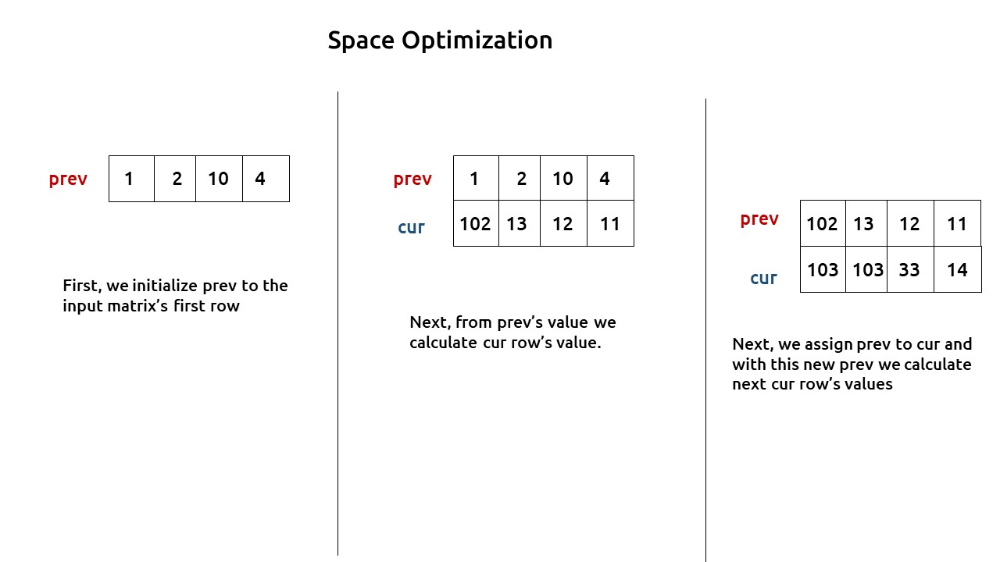

In this article, we will solve the most asked coding interview problem: Minimum/Maximum falling path sum.
Problem Link: Variable Starting and Ending Point
Problem Description:
We are given an ‘N*M’ matrix. We need to find the maximum path sum from any cell of the first row to any cell of the last row.
At every cell we can move in three directions: to the bottom cell (↓), to the bottom-right cell(↘), or to the bottom-left cell(↙).
Examples
Example:

Disclaimer: Don’t jump directly to the solution, try it out yourself first.
Memorization Approach
Algorithm / Intuition
This question is a slight modification of the question discussed in Minimum Path Sum in a Triangular Grid. In the previous problem, we were given a fixed starting and a variable ending point, whereas here the problem states that the starting point can be any cell from the first row and the ending point can be any cell in the last row.
Why a Greedy Solution doesn’t work?
As we have to return the minimum path sum, the first approach that comes to our mind is to take a greedy approach and always form a path by locally choosing the cheaper option. But there is no ‘uniformity’ in the values of the string, therefore it can happen that whenever we are making a local choice that gives us a better path, we actually take a path which in the later stages is giving us the lesser path sum.
As a greedy solution doesn’t work, our next choice will be to try out all the possible paths. To generate all possible paths we will use recursion.
Steps to form the recursive solution:
We will first form the recursive solution by the three points mentioned in Dynamic Programming Introduction.
Step 1: Express the problem in terms of indexes.
We are given an ‘N*M’ matrix. We can define the function with two parameters i and j, where i and j represent the row and column of the matrix.
Now our ultimate aim is to reach the last row. We can define f(i,j) such that it gives us the maximum path sum from any cell in the first row to the cell[i][j].
If we see the figure given below:
We have a top row and a bottom row, we will be writing a recursion in the direction of the last row to the first row. For the last row, i=N-1 therefore we need to find four different answers:
f(N-1,0), f(N-1,1), f(N-1,2), f(N-1,3)
These recursive calls will give the maximum path sum from a cell in the first row to the respective four cells for which the recursion calls are made. We need to return the maximum value among these as the final answer.
Base Case:
There will be the following base cases:
- When i == 0, it means we are at the first row, so the min path from that cell to the first will be the value of that cell itself, hence we return mat[0][j].
At every cell we have three options (we are writing recursion from the last row to the first row): to the top cell (↑), to the top-right cell(↗), or to the top-left cell(↖).
As we are moving to the top cell (↑), at max we will reach the first row, from where we return, so we will never go out of the bounding index.
To move to the top-left cell(↖) or to the top-right cell(↗), it can happen that we may go out of bound as shown in the figure(below). So we need to handle it, we can return -1e9, whenever we go out of bound, in this way this path will not be selected by the calling function as we have to return the maximum path.
- If j<0 or j>=M , then we return -1e9
The pseudocode till this step will be:
Step 2: Try out all possible choices at a given index.
At every cell we have three options (we are writing recursion from the last row to the first row): to the top cell (↑), to the top-right cell(↗), or to the top-left cell(↖).
To go to the top, we will decrease i by 1, and to move towards top-left, we will decrease both i and j by 1 whereas to move to top-right, we will decrease i by 1 and increase j by 1.
Now when we get our answer for the recursive call (f(i-1,j), f(i-1,j-1) or f(i-1,j+1)), we need to also add the current cell value to it as we have to include it too for the current path sum.
Step 3: Take the maximum of all choices
As we have to find the maximum path sum of all the possible unique paths, we will return the maximum of all the choices(up, leftDiagonal, right diagonal)
The final pseudocode after steps 1, 2, and 3:
Steps to memoize a recursive solution:
If we draw the recursion tree, we will see that there are overlapping subproblems. In order to convert a recursive solution the following steps will be taken:
- Create a dp array of size [N][M]
- Whenever we want to find the answer of a particular row and column (say f(i,j)), we first check whether the answer is already calculated using the dp array(i.e dp[i][j]!= -1 ). If yes, simply return the value from the dp array.
- If not, then we are finding the answer for the given values for the first time, we will use the recursive relation as usual but before returning from the function, we will set dp[i][j] to the solution we get.
Code
#include <bits/stdc++.h>
using namespace std;
// Function to recursively find the maximum path sum for a given cell
int getMaxUtil(int i, int j, int m, vector<vector<int>> &matrix, vector<vector<int>> &dp) {
// Base Conditions
if (j < 0 || j >= m)
return -1e9; // A very large negative value to represent an invalid path
if (i == 0)
return matrix[0][j]; // The maximum path sum for the top row is the value itself
if (dp[i][j] != -1)
return dp[i][j]; // If the result for this cell is already calculated, return it
// Calculate the maximum path sum by considering three possible directions: up, left diagonal, and right diagonal
int up = matrix[i][j] + getMaxUtil(i - 1, j, m, matrix, dp);
int leftDiagonal = matrix[i][j] + getMaxUtil(i - 1, j - 1, m, matrix, dp);
int rightDiagonal = matrix[i][j] + getMaxUtil(i - 1, j + 1, m, matrix, dp);
// Store the maximum of the three paths in dp
return dp[i][j] = max(up, max(leftDiagonal, rightDiagonal));
}
// Function to find the maximum path sum in the given matrix
int getMaxPathSum(vector<vector<int>> &matrix) {
int n = matrix.size(); // Number of rows in the matrix
int m = matrix[0].size(); // Number of columns in the matrix
vector<vector<int>> dp(n, vector<int>(m, -1)); // Memoization table to store computed results
int maxi = INT_MIN; // Initialize the maximum path sum to a very small value
// Iterate through each cell in the first row to find the maximum path sum starting from each of them
for (int j = 0; j < m; j++) {
int ans = getMaxUtil(n - 1, j, m, matrix, dp); // Calculate the maximum path sum for the last row
maxi = max(maxi, ans); // Update the maximum path sum if a larger one is found
}
return maxi; // Return the maximum path sum
}
int main() {
// Define the matrix as a 2D vector
vector<vector<int>> matrix{{1, 2, 10, 4},
{100, 3, 2, 1},
{1, 1, 20, 2},
{1, 2, 2, 1}};
// Call the getMaxPathSum function and print the result
cout << getMaxPathSum(matrix);
return 0;
}
import java.util.*;
class TUF {
// Function to find the maximum path sum in the matrix using dynamic programming
static int getMaxUtil(int i, int j, int m, int[][] matrix, int[][] dp) {
// Base Conditions
if (j < 0 || j >= m)
return (int) Math.pow(-10, 9);
if (i == 0)
return matrix[0][j];
if (dp[i][j] != -1)
return dp[i][j];
// Calculate three possible paths: moving up, left diagonal, and right diagonal
int up = matrix[i][j] + getMaxUtil(i - 1, j, m, matrix, dp);
int leftDiagonal = matrix[i][j] + getMaxUtil(i - 1, j - 1, m, matrix, dp);
int rightDiagonal = matrix[i][j] + getMaxUtil(i - 1, j + 1, m, matrix, dp);
// Store the maximum of the three paths in dp
return dp[i][j] = Math.max(up, Math.max(leftDiagonal, rightDiagonal));
}
// Function to find the maximum path sum in the matrix
static int getMaxPathSum(int[][] matrix) {
int n = matrix.length;
int m = matrix[0].length;
int dp[][] = new int[n][m];
for (int row[] : dp)
Arrays.fill(row, -1);
int maxi = Integer.MIN_VALUE;
// For each starting column, find the maximum path sum and update maxi
for (int j = 0; j < m; j++) {
int ans = getMaxUtil(n - 1, j, m, matrix, dp);
maxi = Math.max(maxi, ans);
}
return maxi;
}
public static void main(String args[]) {
int matrix[][] = {{1, 2, 10, 4},
{100, 3, 2, 1},
{1, 1, 20, 2},
{1, 2, 2, 1}};
// Call the getMaxPathSum function and print the result
System.out.println(getMaxPathSum(matrix));
}
}
import sys
# Recursive function to find the maximum path sum starting from cell (i, j)
def getMaxUtil(i, j, m, matrix, dp):
# Base case: If j is out of bounds, return a large negative value
if j < 0 or j >= m:
return -int(1e9)
# Base case: If we are at the top row (i == 0), return the value in the current cell
if i == 0:
return matrix[0][j]
# Check if the maximum path sum for this cell has already been computed
if dp[i][j] != -1:
return dp[i][j]
# Calculate three possible moves: going up, going up-left, and going up-right
up = matrix[i][j] + getMaxUtil(i - 1, j, m, matrix, dp)
leftDiagonal = matrix[i][j] + getMaxUtil(i - 1, j - 1, m, matrix, dp)
rightDiagonal = matrix[i][j] + getMaxUtil(i - 1, j + 1, m, matrix, dp)
# Store the maximum of the three moves in the memoization table
dp[i][j] = max(up, max(leftDiagonal, rightDiagonal))
return dp[i][j]
# Function to find the maximum path sum in the matrix
def getMaxPathSum(matrix):
n = len(matrix) # Number of rows
m = len(matrix[0]) # Number of columns
dp = [[-1 for j in range(m)] for i in range(n)] # Initialize a memoization table
maxi = -sys.maxsize # Initialize the maximum sum to a large negative value
# Iterate through the first row and find the maximum path sum starting from each cell
for j in range(m):
ans = getMaxUtil(n - 1, j, m, matrix, dp)
maxi = max(maxi, ans)
return maxi # Return the maximum path sum
def main():
# Define the input matrix
matrix = [[1, 2, 10, 4], [100, 3, 2, 1], [1, 1, 20, 2], [1, 2, 2, 1]]
# Call the getMaxPathSum function and print the result
print(getMaxPathSum(matrix))
if __name__ == "__main__":
main()
function minimumPathSum(triangle) {
const n = triangle.length;
// Create an array to store the minimum path sums
const dp = new Array(n);
// Initialize the dp array with the values from the bottom row of the triangle
dp[n - 1] = [...triangle[n - 1]];
// Start from the second-to-last row and work upwards
for (let i = n - 2; i >= 0; i--) {
dp[i] = [];
for (let j = 0; j < triangle[i].length; j++) {
// Calculate the minimum path sum by considering the down and diagonal moves
const down = triangle[i][j] + dp[i + 1][j];
const diagonal = triangle[i][j] + dp[i + 1][j + 1];
// Store the minimum of down and diagonal in the dp array
dp[i][j] = Math.min(down, diagonal);
}
}
// The minimum path sum will be stored at dp[0][0]
return dp[0][0];
}
function main() {
const triangle = [
[1],
[2, 3],
[3, 6, 7],
[8, 9, 6, 10]
];
const result = minimumPathSum(triangle);
console.log("Minimum Path Sum:", result);
}
// Call the main function to execute the code
main();
Output: 105
Complexity Analysis
Time Complexity: O(N*N)
Reason: At max, there will be M*N calls of recursion to solve a new problem,
Space Complexity: O(N) + O(N*M)
Reason: We are using a recursion stack space: O(N), where N is the path length and an external DP Array of size ‘N*M’.
Tabulation Approach
Algorithm / Intuition
The steps to convert to the tabular solution are given below:
- Declare a dp[] array of size [N][M].
- First initialize the base condition values, i.e the first row of the dp array to the first row of the input matrix.
- We want to move from the first row to the last row.Whenever we compute values for a cell, we want to have all the values required to calculate it.
- If we see the memoized code, values required for dp[i][j] are: dp[i-1][j], dp[i-1][j-1] and dp[i-1][j+1]. So we only need the values from the ‘i-1’ row.
- We have already filled the first row (i=0), if we start from row ‘1’ and move downwards we will find the values correctly.
- We can use two nested loops to have this traversal.
- At last we need to return the maximum among the last row of dp array as our answer.
Code
#include <bits/stdc++.h>
using namespace std;
// Function to find the maximum path sum in the given matrix
int getMaxPathSum(vector<vector<int>>& matrix) {
int n = matrix.size(); // Number of rows in the matrix
int m = matrix[0].size(); // Number of columns in the matrix
// Create a 2D DP (dynamic programming) array to store maximum path sums
vector<vector<int>> dp(n, vector<int>(m, 0));
// Initialize the first row of dp with values from the matrix (base condition)
for (int j = 0; j < m; j++) {
dp[0][j] = matrix[0][j];
}
// Iterate through the matrix rows starting from the second row
for (int i = 1; i < n; i++) {
for (int j = 0; j < m; j++) {
// Calculate the maximum path sum for the current cell considering three possible directions: up, left diagonal, and right diagonal
// Up direction
int up = matrix[i][j] + dp[i - 1][j];
// Left diagonal direction (if it's a valid move)
int leftDiagonal = matrix[i][j];
if (j - 1 >= 0) {
leftDiagonal += dp[i - 1][j - 1];
} else {
leftDiagonal += -1e9; // A very large negative value to represent an invalid path
}
// Right diagonal direction (if it's a valid move)
int rightDiagonal = matrix[i][j];
if (j + 1 < m) {
rightDiagonal += dp[i - 1][j + 1];
} else {
rightDiagonal += -1e9; // A very large negative value to represent an invalid path
}
// Store the maximum of the three paths in dp
dp[i][j] = max(up, max(leftDiagonal, rightDiagonal));
}
}
// Find the maximum value in the last row of dp, which represents the maximum path sums ending at each cell
int maxi = INT_MIN;
for (int j = 0; j < m; j++) {
maxi = max(maxi, dp[n - 1][j]);
}
// The maximum path sum is the maximum value in the last row
return maxi;
}
int main() {
// Define the matrix as a 2D vector
vector<vector<int>> matrix{{1, 2, 10, 4},
{100, 3, 2, 1},
{1, 1, 20, 2},
{1, 2, 2, 1}};
// Call the getMaxPathSum function and print the result
cout << getMaxPathSum(matrix);
return 0;
}
import java.util.*;
class TUF {
// Function to find the maximum path sum in the matrix using dynamic programming
static int getMaxPathSum(int[][] matrix) {
int n = matrix.length;
int m = matrix[0].length;
int dp[][] = new int[n][m];
// Initializing the first row - base condition
for (int j = 0; j < m; j++) {
dp[0][j] = matrix[0][j];
}
// Calculate the maximum path sum for each cell in the matrix
for (int i = 1; i < n; i++) {
for (int j = 0; j < m; j++) {
int up = matrix[i][j] + dp[i - 1][j];
int leftDiagonal = matrix[i][j];
if (j - 1 >= 0) {
leftDiagonal += dp[i - 1][j - 1];
} else {
leftDiagonal += (int) Math.pow(-10, 9);
}
int rightDiagonal = matrix[i][j];
if (j + 1 < m) {
rightDiagonal += dp[i - 1][j + 1];
} else {
rightDiagonal += (int) Math.pow(-10, 9);
}
// Store the maximum of the three paths in dp
dp[i][j] = Math.max(up, Math.max(leftDiagonal, rightDiagonal));
}
}
// Find the maximum value in the last row of dp
int maxi = Integer.MIN_VALUE;
for (int j = 0; j < m; j++) {
maxi = Math.max(maxi, dp[n - 1][j]);
}
return maxi;
}
public static void main(String args[]) {
int matrix[][] = {{1, 2, 10, 4},
{100, 3, 2, 1},
{1, 1, 20, 2},
{1, 2, 2, 1}};
// Call the getMaxPathSum function and print the result
System.out.println(getMaxPathSum(matrix));
}
}
import sys
# Function to find the maximum path sum in the matrix
def getMaxPathSum(matrix):
n = len(matrix) # Number of rows
m = len(matrix[0]) # Number of columns
# Initialize a dynamic programming table (dp) with zeros
dp = [[0 for j in range(m)] for i in range(n)]
# Initializing the first row of dp as the base condition
for j in range(m):
dp[0][j] = matrix[0][j]
# Iterate through the matrix to compute the maximum path sum
for i in range(1, n):
for j in range(m):
# Calculate the three possible moves: up, left diagonal, and right diagonal
up = matrix[i][j] + dp[i - 1][j]
# Handle left diagonal
left_diagonal = matrix[i][j]
if j - 1 >= 0:
left_diagonal += dp[i - 1][j - 1]
else:
left_diagonal += -int(1e9) # A large negative value if out of bounds
# Handle right diagonal
right_diagonal = matrix[i][j]
if j + 1 < m:
right_diagonal += dp[i - 1][j + 1]
else:
right_diagonal += -int(1e9) # A large negative value if out of bounds
# Store the maximum of the three moves in dp
dp[i][j] = max(up, left_diagonal, right_diagonal)
# Find the maximum path sum in the last row of dp
maxi = -sys.maxsize
for j in range(m):
maxi = max(maxi, dp[n - 1][j])
return maxi # Return the maximum path sum
def main():
# Define the input matrix
matrix = [[1, 2, 10, 4], [100, 3, 2, 1], [1, 1, 20, 2], [1, 2, 2, 1]]
# Call the getMaxPathSum function and print the result
print(getMaxPathSum(matrix))
if __name__ == "__main__":
main()
function getMaxPathSum(matrix) {
const n = matrix.length;
const m = matrix[0].length;
// Initialize a 2D array dp to store maximum path sums
const dp = new Array(n).fill().map(() => new Array(m).fill(0));
// Initialize the first row of dp with values from the matrix
for (let j = 0; j < m; j++) {
dp[0][j] = matrix[0][j];
}
// Iterate over the matrix to calculate maximum path sums
for (let i = 1; i < n; i++) {
for (let j = 0; j < m; j++) {
const up = matrix[i][j] + dp[i - 1][j];
let leftDiagonal = matrix[i][j];
if (j - 1 >= 0) leftDiagonal += dp[i - 1][j - 1];
else leftDiagonal -= 1e9; // Subtract a large negative value for invalid index
let rightDiagonal = matrix[i][j];
if (j + 1 < m) rightDiagonal += dp[i - 1][j + 1];
else rightDiagonal -= 1e9; // Subtract a large negative value for invalid index
// Store the maximum of up, leftDiagonal, and rightDiagonal in dp
dp[i][j] = Math.max(up, leftDiagonal, rightDiagonal);
}
}
// Find the maximum value in the last row of dp
let maxi = Number.MIN_SAFE_INTEGER;
for (let j = 0; j < m; j++) {
maxi = Math.max(maxi, dp[n - 1][j]);
}
return maxi;
}
function main() {
const matrix = [
[1, 2, 10, 4],
[100, 3, 2, 1],
[1, 1, 20, 2],
[1, 2, 2, 1]
];
const result = getMaxPathSum(matrix);
console.log("Maximum Path Sum:", result);
}
// Call the main function to execute the code
main();
Output: 105
Complexity Analysis
Time Complexity: O(N*M)
Reason: There are two nested loops
Space Complexity: O(N*M)
Reason: We are using an external array of size ‘N*M’. The stack space will be eliminated.
Space Optimization Approach
Algorithm / Intuition
If we closely look the relation,
dp[i][j] = matrix[i][j] + max(dp[i-1][j],dp[i-1][j-1], dp[i-1][j+1]))
We see that we only need the previous row, in order to calculate dp[i][j]. Therefore we can space optimize it.
Initially, we can take a dummy row ( say prev). We initialize this row to the input matrix's first row( as done in tabulation).
Now the current row(say cur) only needs the prev row’s value inorder to calculate dp[i][j].

At last, we will return the maximum value among the values of the prev row as our answer.
Code
#include <bits/stdc++.h>
using namespace std;
// Function to find the maximum path sum in the given matrix
int getMaxPathSum(vector<vector<int>>& matrix) {
int n = matrix.size(); // Number of rows in the matrix
int m = matrix[0].size(); // Number of columns in the matrix
vector<int> prev(m, 0); // Represents the previous row's maximum path sums
vector<int> cur(m, 0); // Represents the current row's maximum path sums
// Initialize the first row (base condition)
for (int j = 0; j < m; j++) {
prev[j] = matrix[0][j];
}
for (int i = 1; i < n; i++) {
for (int j = 0; j < m; j++) {
// Calculate the maximum path sum for the current cell considering three possible directions: up, left diagonal, and right diagonal
// Up direction
int up = matrix[i][j] + prev[j];
// Left diagonal direction (if it's a valid move)
int leftDiagonal = matrix[i][j];
if (j - 1 >= 0) {
leftDiagonal += prev[j - 1];
} else {
leftDiagonal += -1e9; // A very large negative value to represent an invalid path
}
// Right diagonal direction (if it's a valid move)
int rightDiagonal = matrix[i][j];
if (j + 1 < m) {
rightDiagonal += prev[j + 1];
} else {
rightDiagonal += -1e9; // A very large negative value to represent an invalid path
}
// Store the maximum of the three paths in the current row
cur[j] = max(up, max(leftDiagonal, rightDiagonal));
}
// Update the 'prev' array with the values from the 'cur' array for the next iteration
prev = cur;
}
// Find the maximum value in the last row of 'prev', which represents the maximum path sums ending at each cell
int maxi = INT_MIN;
for (int j = 0; j < m; j++) {
maxi = max(maxi, prev[j]);
}
// The maximum path sum is the maximum value in the last row of 'prev'
return maxi;
}
int main() {
// Define the matrix as a 2D vector
vector<vector<int>> matrix{{1, 2, 10, 4},
{100, 3, 2, 1},
{1, 1, 20, 2},
{1, 2, 2, 1}};
// Call the getMaxPathSum function and print the result
cout << getMaxPathSum(matrix);
return 0;
}
import java.util.*;
class TUF {
// Function to find the maximum path sum in the matrix using dynamic programming
static int getMaxPathSum(List<List<Integer>> matrix) {
int n = matrix.size();
int m = matrix.get(0).size();
List<Integer> prev = new ArrayList<>(Collections.nCopies(m, 0));
List<Integer> cur = new ArrayList<>(Collections.nCopies(m, 0));
// Initializing the first row - base condition
for (int j = 0; j < m; j++) {
prev.set(j, matrix.get(0).get(j));
}
for (int i = 1; i < n; i++) {
for (int j = 0; j < m; j++) {
int up = matrix.get(i).get(j) + prev.get(j);
int leftDiagonal = matrix.get(i).get(j);
if (j - 1 >= 0) {
leftDiagonal += prev.get(j - 1);
} else {
leftDiagonal += -1e9;
}
int rightDiagonal = matrix.get(i).get(j);
if (j + 1 < m) {
rightDiagonal += prev.get(j + 1);
} else {
rightDiagonal += -1e9;
}
// Store the maximum of the three paths in cur
cur.set(j, Math.max(up, Math.max(leftDiagonal, rightDiagonal)));
}
// Update the prev list with the values from the cur list for the next row
prev = new ArrayList<>(cur);
}
int maxi = Integer.MIN_VALUE;
for (int j = 0; j < m; j++) {
maxi = Math.max(maxi, prev.get(j));
}
return maxi;
}
public static void main(String args[]) {
List<List<Integer>> matrix = new ArrayList<>();
matrix.add(Arrays.asList(1, 2, 10, 4));
matrix.add(Arrays.asList(100, 3, 2, 1));
matrix.add(Arrays.asList(1, 1, 20, 2));
matrix.add(Arrays.asList(1, 2, 2, 1));
// Call the getMaxPathSum function and print the result
System.out.println(getMaxPathSum(matrix));
}
}
import sys
# Function to find the maximum path sum in the matrix
def getMaxPathSum(matrix):
n = len(matrix) # Number of rows
m = len(matrix[0]) # Number of columns
# Initialize two lists: prev (previous row) and cur (current row)
prev = [0] * m
cur = [0] * m
# Initializing the first row of prev as the base condition
for j in range(m):
prev[j] = matrix[0][j]
# Iterate through the matrix to compute the maximum path sum
for i in range(1, n):
for j in range(m):
# Calculate the three possible moves: up, left diagonal, and right diagonal
up = matrix[i][j] + prev[j]
leftDiagonal = matrix[i][j]
if j - 1 >= 0:
leftDiagonal += prev[j - 1]
else:
leftDiagonal += -int(1e9) # A large negative value if out of bounds
rightDiagonal = matrix[i][j]
if j + 1 < m:
rightDiagonal += prev[j + 1]
else:
rightDiagonal += -int(1e9) # A large negative value if out of bounds
# Store the maximum of the three moves in the current row (cur)
cur[j] = max(up, max(leftDiagonal, rightDiagonal))
# Update prev with the values of cur for the next iteration
prev = cur[:]
# Find the maximum path sum in the last row of prev
maxi = -sys.maxsize
for j in range(m):
maxi = max(maxi, prev[j])
return maxi # Return the maximum path sum
def main():
# Define the input matrix
matrix = [[1, 2, 10, 4], [100, 3, 2, 1], [1, 1, 20, 2], [1, 2, 2, 1]]
# Call the getMaxPathSum function and print the result
print(getMaxPathSum(matrix))
if __name__ == '__main__':
main()
function getMaxPathSum(matrix) {
const n = matrix.length;
const m = matrix[0].length;
// Initialize two arrays: prev and cur
let prev = new Array(m).fill(0);
let cur = new Array(m).fill(0);
// Initialize the first row of prev with values from the matrix
for (let j = 0; j < m; j++) {
prev[j] = matrix[0][j];
}
// Iterate over the matrix to calculate maximum path sums
for (let i = 1; i < n; i++) {
for (let j = 0; j < m; j++) {
const up = matrix[i][j] + prev[j];
let leftDiagonal = matrix[i][j];
if (j - 1 >= 0) leftDiagonal += prev[j - 1];
else leftDiagonal -= 1e9; // Subtract a large negative value for invalid index
let rightDiagonal = matrix[i][j];
if (j + 1 < m) rightDiagonal += prev[j + 1];
else rightDiagonal -= 1e9; // Subtract a large negative value for invalid index
// Store the maximum of up, leftDiagonal, and rightDiagonal in cur
cur[j] = Math.max(up, leftDiagonal, rightDiagonal);
}
// Update the prev array with the values from cur
prev = [...cur];
}
// Find the maximum value in the prev array
let maxi = Number.MIN_SAFE_INTEGER;
for (let j = 0; j < m; j++) {
maxi = Math.max(maxi, prev[j]);
}
return maxi;
}
function main() {
const matrix = [
[1, 2, 10, 4],
[100, 3, 2, 1],
[1, 1, 20, 2],
[1, 2, 2, 1]
];
const result = getMaxPathSum(matrix);
console.log("Maximum Path Sum:", result);
}
// Call the main function to execute the code
main();
Output:105
Complexity Analysis
Time Complexity: O(N*M)
Reason: There are two nested loops
Space Complexity: O(M)
Reason: We are using an external array of size ‘M’ to store only one row.
Video Explanation
Special thanks to Anshuman Sharma and Abhipsita Das for contributing to this article on takeUforward. If you also wish to share your knowledge with the takeUforward fam, please check out this article